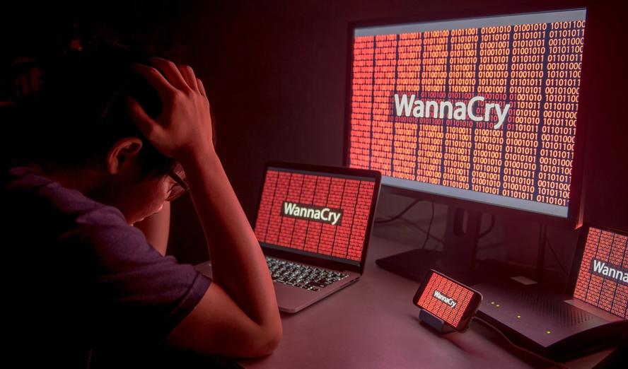

Taking binaries apart to understand how they work — notes, tools, and challenges. First up: a full walkthrough of the WannaCry ransomware.

Using Ghidra to disassemble the WannaCry ransomware and hunt for the infamous killswitch URL that halted its 2017 rampage — then tracing the entry point, service creation, and propagation path down to EternalBlue.